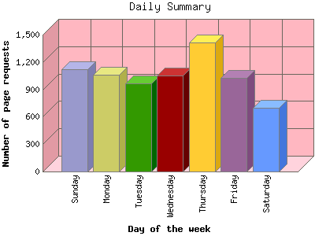
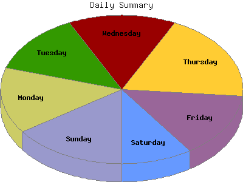

Analog 5.31
Analog 5.31 Report Magic 2.16
Report Magic 2.16The Daily Summary identifies the level of activity as a total for each day of the week. This summary also compares the level of activity on weekdays and weekends as a total for the report time frame.


| Day of the week | Number of page requests | Percentage of the page requests | Percentage of the bytes | |
|---|---|---|---|---|
| 1. | Sunday | 1,120 | 15.27% | 9.55% |
| 2. | Monday | 1,060 | 14.45% | 15.23% |
| 3. | Tuesday | 966 | 13.17% | 13.77% |
| 4. | Wednesday | 1,056 | 14.39% | 21.38% |
| 5. | Thursday | 1,412 | 19.25% | 17.48% |
| 6. | Friday | 1,024 | 13.96% | 14.76% |
| 7. | Saturday | 699 | 9.53% | 7.83% |
| Total Weekdays | 11,036 | 150.42% | 165.23% | |
| Total Weekend | 3,638 | 49.58% | 34.77% | |
This report was generated on May 6, 2008 05:30.
Report time frame July 18, 2007 21:56 to May 5, 2008 23:59.
| Web statistics report produced by: | |
| Analog 5.31 | Report Magic 2.16 |